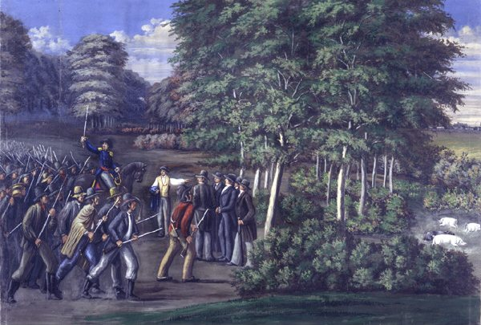
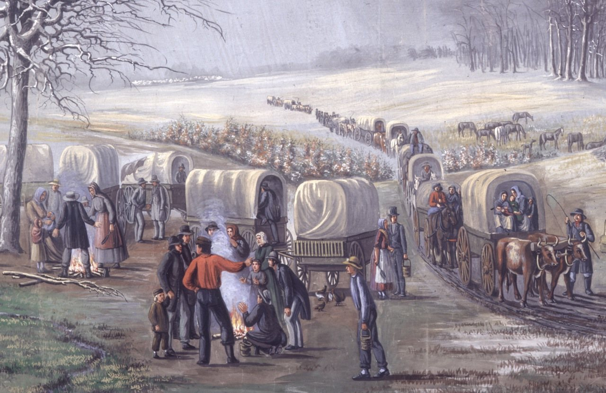
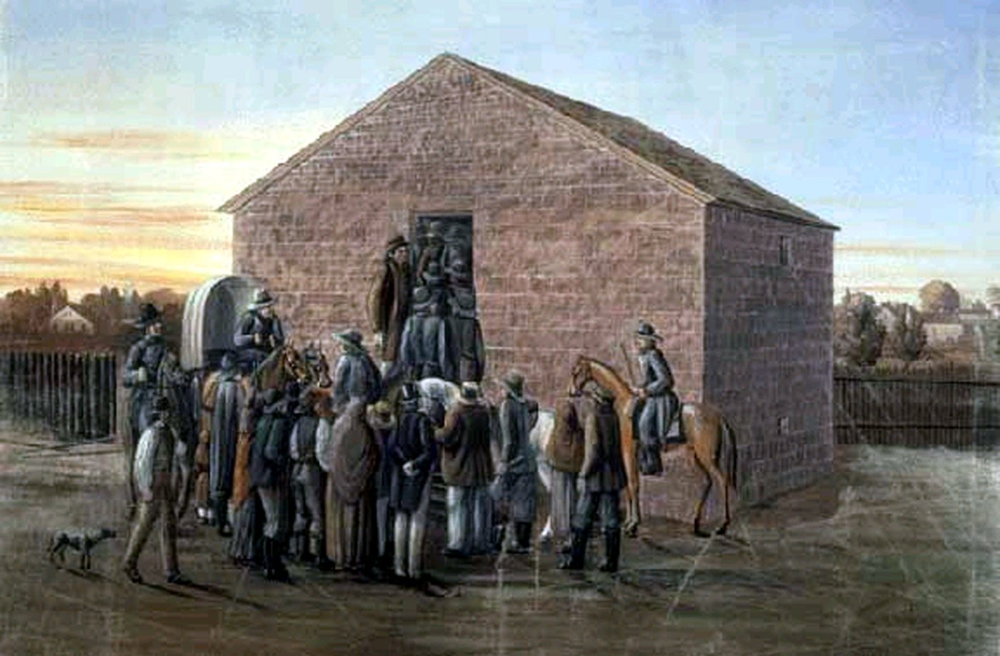

The Refiner's Fire
But who may abide the day of his coming? and who shall stand when he appeareth? for he is like a refiner’s fire, and like fullers’ soap: and he shall sit as a refiner and purifier of silver.
Malachi 3:2–3
Every Snare
A year after the glory of the temple came the hardest stretch of Joseph Smith’s life. It began with money.
In the fall of 1836, Joseph and other church leaders decided to found a bank in Kirtland. Like many small American towns of the day, Kirtland wanted a bank of its own. Most people’s wealth was tied up in land, and a local bank could make loans and print its own notes to keep trade moving. For the Saints the hopes ran deeper: a growing town could take in converts, help the Saints driven out of Jackson County, send out missionaries and, in the end, help build Zion. The Kirtland Safety Society was officially established on November 2, 1836, with Sidney Rigdon and Joseph Smith as officers.1
It struggled from the start. The Ohio legislature granted no new bank charters that winter, so the society’s directors chose to operate without one, as some other institutions did. Then came the Panic of 1837, a national crisis that dragged land values and crop prices down and drove banks, businesses and even many states into bankruptcy over the next few years. By August 1837 the Safety Society had stopped operating. Many Saints lost money. Joseph’s losses, the Church’s historians write, “were substantial.” He and Sidney were also tried and fined under an 1816 Ohio law against circulating such notes, a law that was rarely enforced.2
The money was only part of the trouble. Many Saints had believed the Safety Society would succeed if they were faithful, and when it failed, some decided their prophet had failed too. Saints puts it plainly: in the past, revelations had made it easy to believe Joseph was a prophet of God, “But when Joseph’s statements about the Safety Society appeared to go unfulfilled, and their investments began to slip away, many Saints became uneasy and critical of Joseph.”3 To pay church debts Joseph had to mortgage the temple itself. Workmen building his own house were paid in Safety Society notes, which fewer and fewer merchants would take.4
Some of the men who turned against him had stood closest to him. A group led by Warren Parrish, who had worked side by side with Joseph for years and served as the Safety Society’s secretary, began disrupting meetings in the temple. Three of the Twelve Apostles joined the dissenters, and others wavered. One Sunday that summer, Joseph Sr. stood in the temple to defend his son. Parrish rushed the stand and seized the old patriarch to pull him from the pulpit. Joseph Sr. called out to Oliver Cowdery, who was the local justice of the peace, but Oliver, Saints records, “did nothing to help his old friend.” William Smith dragged Parrish away, John Boynton drew a sword, and the house that had rung with hosannas a year before emptied in chaos through its doors and windows.5
Not everyone fell away. A convert from Canada named John Taylor was in Kirtland that season. When Parley Pratt, then angry with Joseph himself, warned him not to follow the prophet, John reminded Parley of his own testimony: “If the work was true six months ago, it is true today. If Joseph Smith was then a prophet, he is now a prophet.”6 Parley soon repented and came back.7
And in the middle of it all, the work spread. One day, sitting with Heber C. Kimball in the temple pulpits, Joseph leaned over and told him the Spirit had whispered: “Let my servant Heber go to England and proclaim my gospel, and open the door of salvation to that nation.” Heber, a potter with little schooling, prayed, “O Lord, I am a man of stammering tongue and altogether unfit for such a work.” He went anyway.8 By that summer he was baptizing in the River Ribble.9 The same season that broke Kirtland opened Britain.
“Move On to the West”
By the new year the dissenters had grown more bitter. There were threats of violence, and debts and lawsuits hounded the prophet. A sheriff was looking for him with a warrant. On January 12, 1838, Joseph sought the Lord and received a revelation: “Let the presidency of my church take their families… and move on to the west as fast as the way is made plain.”10
That night Joseph and Sidney Rigdon got on their horses and rode out of Kirtland. Picture two riders in the January dark, wrapped against the cold, not looking back at the temple on the bluff.† They rode south until morning, nearly sixty miles, and waited for their families to catch up with the wagons. Neither man expected to see Kirtland again, and Joseph never did.11
They went to Far West, Missouri, the town the exiles from Jackson County had built on the open prairie of Caldwell County, a county the legislature had organized for the Saints’ settlement. Far West had houses and cabins, a hotel, shops and a bishop’s storehouse, with a temple site at its center.12 That spring, on April 26, 1838, a revelation gave the church the name it still carries: The Church of Jesus Christ of Latter-day Saints. “Arise and shine forth,” the Lord said, “that thy light may be a standard for the nations.”13
But the dissent had followed Joseph west, and the loss that hurt most came that same April. On April 12, a church council in Far West heard charges against Oliver Cowdery. He had sold his Jackson County land against a revelation, opposed church leaders and accused Joseph of adultery. Oliver did not come to the hearing. He sent a letter defending his right to sell his land and resigning his membership. Joseph stood and spoke of how much he had once trusted Oliver, and he answered the accusation about his relationship with Fanny Alger. After a long day, the council made what Saints calls “the painful decision” to remove Oliver from the church.14 David Whitmer was excommunicated soon after.15
It is one of the heartbreaks of the story. The schoolteacher who had written the Book of Mormon as Joseph spoke it, who had knelt with him on the banks of the Susquehanna, was gone. Oliver’s story did not end there, though. Years later, after Joseph’s death, he came to a conference of the Saints in Iowa, pledged his support to the Twelve and was rebaptized by Orson Hyde. He was planning to join the Saints in the West when he died in 1850.16 He never denied his witness of the Book of Mormon.
“We Will Infringe on the Rights of No People”
On July 4, 1838, the Saints in Far West laid the cornerstones of a new temple. They marched in a parade, raised the American flag on a tall pole and gathered around the excavated foundation. Then Sidney Rigdon climbed a stand and gave the kind of fiery Independence Day speech Americans of the time loved. The Saints, he said, would not be driven again. If mobs came against them, “it shall be between us and them a war of extermination.” In the same speech he promised, “We will infringe on the rights of no people; but shall stand for our own until death.”17 Joseph had the speech printed as a pamphlet.18 The words were meant as defiance. Their neighbors heard them as a threat.
This part of the story has to be told honestly, because the Church’s own historians tell it honestly. That summer some Latter-day Saint men at Far West organized a band known as the Danites. They meant to defend the community against dissenters and hostile Missourians. They intimidated church dissenters, and they warned Oliver Cowdery, David Whitmer and others to leave the county. Within days those men fled. The Church’s history today says historians “generally concur that Joseph Smith approved of the Danites but that he probably was not briefed on all their plans and likely did not sanction the full range of their activities.” The Danites lasted only about five months, from June through October 1838, but legends about them lasted much longer.19
Trouble came quickly. On Election Day in August, men in Daviess County tried to keep Latter-day Saints from voting, and a fight broke out at the polls in Gallatin. Mobs gathered and drove the Saints out of De Witt, in Carroll County. When the Saints asked the governor, Lilburn W. Boggs, for help, he answered that they and the Missourians must fight their own battles. As reports came in of Saints’ homes being burned, they decided to fight back.20
In mid-October, Latter-day Saint forces raided Gallatin and Millport, two towns they saw as centers of hostility. They burned homes and stores and carried off goods for refugee Saints. These were wrongs, and the Church’s histories call them what they were.21 Days later, before dawn at the Crooked River, a company of Saints riding to rescue prisoners clashed with a unit of the state militia that they took for a mob. Among those killed was David W. Patten, one of the original Twelve Apostles, shot through the abdomen as he charged.22 Rumor turned the skirmish into a massacre. Some reports reaching the governor claimed the Saints had killed fifty Missourians, others sixty.23
“Exterminated or Driven”
On October 27, 1838, Governor Boggs issued an executive order. He wrote that the Saints had “made war upon the people of this State” and directed that they be “exterminated or driven from the State if necessary.”24 In the language of the day, “extermination” could mean forced removal rather than killing. For the Saints, the difference hardly mattered.25
Three days later, on the crisp, pleasant afternoon of October 30, children were playing along Shoal Creek at a small settlement called Hawn’s Mill. Women were washing clothes. Amanda Barnes Smith sat in her tent while her two daughters played nearby. Her husband, Warren, was at the blacksmith shop with their three young sons, Willard, Sardius and Alma. The family was only passing through on the way from Kirtland.26
Then the riders came. A company of armed men, vigilantes rather than the state militia, attacked the settlement. Women and children ran for the woods. Men and boys took shelter in the blacksmith shop, and the attackers fired through the gaps between its logs. Seventeen Latter-day Saints were killed and twelve to fifteen more were wounded. Warren Smith was among the dead. Ten-year-old Sardius, found hiding under the bellows, was dragged outside and shot. Young Alma, six or seven years old, hiding beside him, was shot in the hip, a gaping wound.27 There is no evidence the attackers knew of the governor’s order.28
That night Amanda knelt with her surviving children around her wounded boy. She asked Alma whether he believed the Lord could make him a new hip, and he answered that he did if she thought so. Then she prayed: “Oh, my Heavenly Father, Thou seest my poor wounded boy and knowest my inexperience. Oh, Heavenly Father, direct me what to do.” She felt she was told what to do. She mixed the ashes of the cooking fire with water to make lye and washed the wound again and again until it was clean. She sent Willard for the roots of an elm tree and made a poultice from them. “Now you lie like that, and don’t move,” she told her son, “and the Lord will make you another hip.” When the children were asleep, she stepped outside and wept.29
We will come back to Alma.
“These Are the Prisoners”
On October 31, the Saints’ militia commander at Far West, George Hinkle, told Joseph that General Lucas, the Missourians’ commander, wanted to talk about ending the conflict. Joseph agreed to meet them under a flag of truce. As Joseph, Sidney, Parley Pratt and others rode out, General Samuel D. Lucas met them with soldiers and a cannon. Hinkle stepped forward and said, “These are the prisoners I agreed to deliver up.” Lucas drew his sword. “Gentlemen,” he said, “you are my prisoners.”30 The next day Far West surrendered its arms. Soldiers went through the town looting houses. Some assaulted women. Hyrum, who was sick, was driven from his home at bayonet point and added to the prisoners.31

That night Lucas held a hasty court-martial without the prisoners present and sentenced them to be shot for treason. He ordered General Alexander Doniphan to march Joseph and the others into the Far West square at nine the next morning and execute them in front of their people. Doniphan, a lawyer who had once given the Saints legal help, refused. “It is cold-blooded murder,” he sent word to Lucas. “I will not obey your order.” If Lucas carried out the executions, Doniphan warned, “I will hold you responsible before an earthly tribunal, so help me God!” By morning Doniphan and his troops had gone.32
Instead of shooting the prisoners, Lucas took them to Jackson County. On the way out of Far West, Joseph was allowed to stop at his house under guard to gather some belongings. Emma and the children clung to him. The guards drew swords and pulled them apart. Five-year-old Joseph III held on to his father and sobbed, “Why can’t you stay with us?” A guard thrust his sword at the boy.33
Lucy Mack Smith heard that if she wanted to see her sons alive she must come at once. Joseph Sr. was unable to go, so Lucy went with her daughter Lucy. A crowd of soldiers stood between them and the wagon. “I am the mother of the prophet,” she called out. “Is there not a gentleman here, who will assist me to that wagon, that I may take a last look at my children, and speak to them once more.” One man cleared a way. The wagon’s cover was “of strong cloth, and nailed down so close” that Hyrum could barely get his hand out to her. At the back of the wagon, Joseph pushed his hand out between the cover and the wagon bed, and his mother and sister held it. He did not speak. Lucy begged, “Joseph do speak to your poor mother once more— I cannot bear to go till I hear you voice.” He sobbed, “God bless you mother.” Then the wagon pulled away, just as young Lucy was pressing his hand to her lips.34
Lucy wrote that the house was filled “with mourning, lamentation, and woe.” Then, she said, comfort came, and with it a prophecy: “Let your heart be comforted concerning your children; they shall not harmed by their enemies.”35 She told the family, and they were consoled.
Across the Ice
After hearings in Richmond, Joseph, Hyrum and four other men were locked in the jail at Liberty, in Clay County, on December 1, 1838, to wait for trial in the spring.36 The Saints in Missouri had to leave the state, Mobs rode through Far West warning that anyone still there at the end of February would be killed.37

David Patten was dead and Thomas Marsh had left the church, so the leadership of the Twelve fell to Brigham Young, who was thirty-seven years old. Some Saints with the means to leave got out quickly and left the poor behind. On January 29, 1839, Brigham called on those in Far West to covenant to help one another out of the state. “We will never desert the poor,” he told them, “till they shall be out of the reach of the exterminating order.” A committee gathered donations and supplies, assessed every family’s needs and scouted roads east toward the Mississippi, 160 miles away.38
In early February, Emma left Far West with her four children: Julia, nearly eight; Joseph III, six; Frederick, two; and the baby, Alexander. She carried Joseph’s papers with her. They crossed Missouri’s frozen ground for more than a week, and one of their horses died on the way. At the Mississippi they found the river frozen over. No ferry could run, but the ice was just thick enough to cross on foot. With Frederick and Alexander in her arms, Emma stepped onto the ice. Little Joseph held one side of her skirt and Julia the other, and the four children and their mother walked across until they reached the Illinois shore.39
The people of Quincy, Illinois, were kinder than she had expected. They helped the Saints across the river and gave them food, clothing, shelter and work.40 Soon after she arrived, Emma wrote to her husband: “I still live and am yet willing to suffer more, if it is the will of kind heaven that I should, for your sake.” She did not pretend it was easy. “No one but God knows the reflections of my mind and the feelings of my heart,” she wrote, “when I left our house and home and almost all of everything that we possessed, excepting our little children, and took my journey out of the state of Missouri, leaving you shut up in that lonesome prison.”41
Back at Hawn’s Mill, Amanda Smith still could not leave, because Alma could not travel. Once he asked her, “Do you think that the Lord can, Mother?” She answered, “Yes, my son. He has showed it all to me in a vision.” When the mob set a deadline for the Saints to be gone, Alma’s wound was still raw, and Amanda refused to go. Afraid to pray aloud, she hid in a pile of cornstalks to pray. When she finished, she heard a voice repeat a line from a hymn she knew:
That soul, though all hell should endeavor to shake, I’ll never, no never, no never forsake!
Not long afterward, she was at the stream fetching water when she heard her children screaming in the house. She ran to the door and found Alma running around the room. “I’m well, Ma, I’m well!” he cried. Flexible cartilage had grown where his hip had been. Amanda packed up her family, took back the horse a Missourian had stolen from her, and set out for Illinois.42
“O God, Where Art Thou?”
The jail at Liberty was a two-story stone building only fourteen by fourteen and a half feet. Its walls were rough limestone outside and oak inside, with loose rock packed in between. The prisoners were kept on the lower floor, reached only through a trapdoor in the jailer’s floor above. Two barred windows, each two feet wide and six inches high, let in a little air.43 Joseph described it in a letter: “We are kept under a strong guard, night and day, … our food is scant, uniform, and coarse; we have not the privilege of cooking for ourselves, we have been compelled to sleep on the floor with straw, and not blankets sufficient to keep us warm; and when we have a fire, we are obliged to have almost a constant smoke.”44 The food sometimes made the men vomit. Hecklers looked in through the windows to shout at them.45

Family visits brought some relief. Emma came three times, once bringing young Joseph.46 In February, Hyrum’s wife, Mary Fielding Smith, still weak from childbirth and a severe cold, came with her sister Mercy and her newborn son, Joseph F. Smith. It was the first time Hyrum had seen the baby. The jailer locked the women into the dungeon with the prisoners for the night. Few of them slept.47
By March the visits had almost stopped, because nearly all the Saints were gone from Missouri. Joseph had watched the church thrive and now seemed to see it near collapse. Zion in Jackson County was lost, Kirtland was divided and its temple was in the hands of creditors, and the Saints were scattered as refugees along the Mississippi. In the Old Testament the Lord had rescued His people with a strong arm, so why had He not done it now?48 Out of that darkness came a prayer that Latter-day Saints now read as scripture:
O God, where art thou? And where is the pavilion that covereth thy hiding place?
How long shall thy hand be stayed, and thine eye, yea thy pure eye, behold from the eternal heavens the wrongs of thy people and of thy servants, and thine ear be penetrated with their cries?49
It is an old question. Long before, a psalmist had asked, “How long wilt thou forget me, O LORD? for ever? how long wilt thou hide thy face from me?”50 Jewish readers will know how often their people have asked it, from exile and from places far darker than a Missouri jail. Joseph asked it in his turn.
On the evening of March 19, letters arrived from Emma, from Joseph’s brother Don Carlos and from Bishop Edward Partridge. The next day Joseph began dictating a long letter to the church. Perhaps the scribe sat close under one of those narrow windows to catch the light.† In the letter, Joseph described how the letters from home had affected him:
those who have not been inclosed in the walls of a prison without cause or provication can have but a little ideah how sweat sweet the voice of a friend is51
That friendly voice, he wrote, softened him until all “enmity malice and hatred and past diferances misunderstandings and mis managements lie slain victoms at the feet of hope.” And then, “when the hart is sufficiently contrite then the voice of inspiration steals along and whispers”:52
My son, peace be unto thy soul; thine adversity and thine afflictions shall be but a small moment;
And then, if thou endure it well, God shall exalt thee on high; thou shalt triumph over all thy foes.
Thy friends do stand by thee, and they shall hail thee again with warm hearts and friendly hands.
Thou art not yet as Job; thy friends do not contend against thee, neither charge thee with transgression, as they did Job.53
In the same letter came a warning, and he aimed it at the Saints themselves as much as at their enemies. It was the nature of almost all men, the revelation said, “as soon as they get a little authority, as they suppose,” to “begin to exercise unrighteous dominion.”54 Joseph had just watched men in the church do exactly that, and so had Missouri. The answer was a different kind of power:
No power or influence can or ought to be maintained by virtue of the priesthood, only by persuasion, by long-suffering, by gentleness and meekness, and by love unfeigned;
By kindness, and pure knowledge, which shall greatly enlarge the soul without hypocrisy, and without guile—55
He also warned against shallow, overheated religion: “A fanciful and flowely and heated immagination be aware of because the things of God Are of deep import and time and expeariance and careful and pondurous and solom thoughts can only find them out.”56
The Lord’s words to him grew more personal still:
And if thou shouldst be cast into the pit, or into the hands of murderers, and the sentence of death passed upon thee; if thou be cast into the deep; if the billowing surge conspire against thee; if fierce winds become thine enemy; if the heavens gather blackness, and all the elements combine to hedge up the way; and above all, if the very jaws of hell shall gape open the mouth wide after thee, know thou, my son, that all these things shall give thee experience, and shall be for thy good.
The Son of Man hath descended below them all. Art thou greater than he?57
Joseph had already been cast into the hands of murderers, and the sentence of death had already been passed on him once at Far West. The revelation did not promise that it would not happen again. It promised that he was not alone, that the Savior had gone lower still, and that “thy days are known, and thy years shall not be numbered less; therefore, fear not what man can do, for God shall be with you forever and ever.”58
The Furnace of Affliction
After the Lord spoke peace to him, Saints says, Joseph no longer feared that God had forsaken him or the church. “Hell may pour forth its rage like the burning lava of Mount Vesuvius,” he wrote to the Saints, “yet shall Mormonism stand.”59 When Heber Kimball came to Liberty to report that the state supreme court would not act on the case, the guards would not let him in, so he called down through the window. Joseph called back, “Be of good cheer, and get all the Saints away as fast as possible.”60
Before leaving the jail for another hearing, Joseph wrote to Emma: “I want to see little Frederick, Joseph, Julia, and Alexander. Tell them Father loves them with a perfect love, and he is doing all he can to get away from the mob to come to them.”61 The prisoners won a change of venue. On April 6, 1839, nine years to the day after the church was organized, an armed guard took them from the jail at Liberty. On the road to Boone County the guards let them escape, and they made their way to Illinois.62
Later Latter-day Saints came to speak of Liberty Jail as both a prison and a temple.63 Malachi had written that the Lord “shall sit as a refiner and purifier of silver.” Isaiah heard the Lord say to Israel, “Behold, I have refined thee, but not with silver; I have chosen thee in the furnace of affliction.”64 Neither prophet suggests the furnace is pleasant or the suffering deserved. What they promise is that it is not meaningless, and that the One who sits by the fire is watching the silver.
By the spring of 1839, the Saints had lost Kirtland and all of Missouri. They were scattered along the eastern bank of the Mississippi with almost nothing. Their prophet came across the river to meet them. Upstream, on a bend of that same river, was a muddy, malarial stretch of land with a few houses called Commerce. Joseph would give it a Hebrew name.
Key: † marks imagined connective detail. Full citations and verification status are in 10-sources.md. Lucy Mack Smith is quoted from her 1845 history (JSP fair copy). Joseph Smith’s 20 March 1839 letter is quoted from the JSP transcription with its original spelling.
Notes
-
Church History Topics (CHT), “Kirtland Safety Society,” https://www.churchofjesuschrist.org/study/history/topics/kirtland-safety-society. ↩
-
CHT, “Kirtland Safety Society.” See also JSP, Documents, vol. 5 (2017), 285–440. ↩
-
Saints, vol. 1, ch. 23. ↩
-
Saints, vol. 1, ch. 24. ↩
-
Saints, vol. 1, chs. 23–25. ↩
-
Saints, vol. 1, ch. 24. ↩
-
CHT, “Kirtland Safety Society” (“Others, like Apostle Parley P. Pratt, expressed feelings of betrayal and disappointment in the short term but soon returned to fellowship”). ↩
-
Saints, vol. 1, ch. 24. ↩
-
Saints, vol. 1, ch. 25 (Jennetta Richards’s baptism, August 1837). ↩
-
Revelation, 12 January 1838–C, JSP, https://www.josephsmithpapers.org/paper-summary/revelation-12-january-1838-c/1 (spelling standardized as in Saints); Saints, vol. 1, ch. 25. ↩
-
Saints, vol. 1, ch. 25. The riders’ appearance is imagined (†). ↩
-
Saints, vol. 1, chs. 24–25; CHT, “Mormon-Missouri War of 1838.” ↩
-
Doctrine and Covenants 115:4–5 (Revelation, 26 April 1838); Saints, vol. 1, ch. 26. ↩
-
Saints, vol. 1, ch. 26; Minutes, 12 April 1838, in JSP, Documents, vol. 6, 83–94 (as cited in Saints). ↩
-
Saints, vol. 1, ch. 27. ↩
-
CHT, “Oliver Cowdery,” https://www.churchofjesuschrist.org/study/history/topics/oliver-cowdery. See
10-sources.mdon the date. ↩ -
CHT, “Mormon-Missouri War of 1838”; Saints, vol. 1, ch. 27. ↩
-
Saints, vol. 1, ch. 27. ↩
-
CHT, “Danites”; Saints, vol. 1, ch. 27. ↩
-
CHT, “Mormon-Missouri War of 1838”; Saints, vol. 1, ch. 28. ↩
-
CHT, “Mormon-Missouri War of 1838” and “Danites”; Saints, vol. 1, ch. 29. ↩
-
Saints, vol. 1, ch. 29; CHT, “Mormon-Missouri War of 1838.” Casualty counts differ between CHT articles; see
10-sources.md. ↩ -
Saints, vol. 1, ch. 29. ↩
-
CHT, “Extermination Order.” ↩
-
CHT, “Extermination Order.” ↩
-
Saints, vol. 1, ch. 30. ↩
-
CHT, “Hawn’s Mill Massacre”; Saints, vol. 1, ch. 30. ↩
-
CHT, “Extermination Order” and “Hawn’s Mill Massacre.” ↩
-
Saints, vol. 1, ch. 30, drawing on Amanda Barnes Smith’s own accounts. ↩
-
Saints, vol. 1, ch. 30. ↩
-
Saints, vol. 1, ch. 31. ↩
-
Saints, vol. 1, ch. 31; CHT, “Extermination Order.” ↩
-
Saints, vol. 1, ch. 31. ↩
-
Lucy Mack Smith, History, 1845, 280–81, JSP, https://www.josephsmithpapers.org/paper-summary/lucy-mack-smith-history-1845/289. Lucy’s spelling and punctuation retained (“hear you voice”). ↩
-
Lucy Mack Smith, History, 1845, 281, JSP, https://www.josephsmithpapers.org/paper-summary/lucy-mack-smith-history-1845/290. “They shall not harmed” is as written. ↩
-
CHT, “Liberty Jail,” https://www.churchofjesuschrist.org/study/history/topics/liberty-jail. ↩
-
Saints, vol. 1, ch. 32. ↩
-
Saints, vol. 1, ch. 32. ↩
-
Saints, vol. 1, ch. 32. ↩
-
Saints, vol. 1, ch. 32. ↩
-
Emma Smith to Joseph Smith, 7 March 1839, as quoted in Saints, vol. 1, ch. 32. ↩
-
Saints, vol. 1, ch. 32. ↩
-
CHT, “Liberty Jail.” ↩
-
CHT, “Liberty Jail.” ↩
-
Saints, vol. 1, chs. 32–33. ↩
-
CHT, “Liberty Jail.” ↩
-
Saints, vol. 1, ch. 32; CHT, “Liberty Jail.” ↩
-
Saints, vol. 1, ch. 33. ↩
-
Doctrine and Covenants 121:1–2. ↩
-
Psalm 13:1 (KJV). ↩
-
Letter to the Church and Edward Partridge, 20 March 1839, 7, JSP, https://www.josephsmithpapers.org/paper-summary/letter-to-the-church-and-edward-partridge-20-march-1839/7. ↩
-
Letter to the Church and Edward Partridge, 20 March 1839, 7–8, JSP. ↩
-
Doctrine and Covenants 121:7–10. ↩
-
Doctrine and Covenants 121:39. ↩
-
Doctrine and Covenants 121:41–42. ↩
-
Letter to the Church and Edward Partridge, 20 March 1839, 12, JSP, https://www.josephsmithpapers.org/paper-summary/letter-to-the-church-and-edward-partridge-20-march-1839/12. ↩
-
Doctrine and Covenants 122:7–8. ↩
-
Doctrine and Covenants 122:9. ↩
-
Saints, vol. 1, ch. 33, quoting Joseph’s March 1839 letters. ↩
-
Saints, vol. 1, ch. 33. ↩
-
Joseph Smith to Emma Smith, 4 April 1839, as quoted in Saints, vol. 1, ch. 33. ↩
-
CHT, “Liberty Jail”; Saints, vol. 1, ch. 33. ↩
-
CHT, “Liberty Jail.” ↩
-
Malachi 3:3; Isaiah 48:10 (KJV). ↩